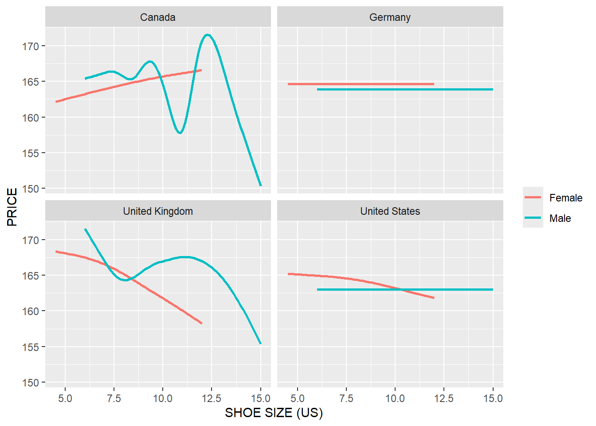

library(tidyverse)
library(janitor)
library(lubridate)
Exploratory Data Analysis in R
Exploratory Data Analysis in R
1 Introduction
The objective of this document is to introduce the necessary functions from tidyverse package for data manipulation and data visualization. There are basically six functions - select(), filter(), mutate(), arrange(), group_by(), and summarize() - from dplyr package of tidyverse ecosystem that are very much necessary for data manipulation. These six functions can be used for 80% of data manipulation problems. Additionally, this handout also introduces ggplot functions from tidyverse. ggplot is considered very effective for data visualization.
2 Loading Necessary Packages
3 Data Set for Classroom Practice
# Loading Data
product <- read_csv(
"https://raw.githubusercontent.com/msharifbd/DATA/main/Al-Bundy_raw-data.csv"
)4 Clean the Data Set
# To clean the names of the variables
product <- product %>%
janitor::clean_names() %>% # this function cleans the names of the variables
dplyr::rename_all(toupper) # All variable names in upper case5 Meta Data
Once you load a data set in R, your next job should be to learn about some characteristics about the data.
glimpse(product)Rows: 14,967
Columns: 14
$ INVOICE_NO <dbl> 52389, 52390, 52391, 52392, 52393, 52394, 52395, 52396, 52…
$ DATE <chr> "1/1/2014", "1/1/2014", "1/1/2014", "1/1/2014", "1/1/2014"…
$ COUNTRY <chr> "United Kingdom", "United States", "Canada", "United State…
$ PRODUCT_ID <dbl> 2152, 2230, 2160, 2234, 2222, 2173, 2200, 2238, 2191, 2237…
$ SHOP <chr> "UK2", "US15", "CAN7", "US6", "UK4", "US15", "GER2", "CAN5…
$ GENDER <chr> "Male", "Male", "Male", "Female", "Female", "Male", "Femal…
$ SIZE_US <dbl> 11.0, 11.5, 9.5, 9.5, 9.0, 10.5, 9.0, 10.0, 10.5, 9.0, 10.…
$ SIZE_EUROPE <chr> "44", "44-45", "42-43", "40", "39-40", "43-44", "39-40", "…
$ SIZE_UK <dbl> 10.5, 11.0, 9.0, 7.5, 7.0, 10.0, 7.0, 9.5, 10.0, 7.0, 9.5,…
$ UNIT_PRICE <dbl> 159, 199, 149, 159, 159, 159, 179, 169, 139, 149, 129, 169…
$ DISCOUNT <dbl> 0.0, 0.2, 0.2, 0.0, 0.0, 0.0, 0.0, 0.0, 0.0, 0.0, 0.0, 0.1…
$ YEAR <dbl> 2014, 2014, 2014, 2014, 2014, 2014, 2014, 2014, 2014, 2014…
$ MONTH <dbl> 1, 1, 1, 1, 1, 1, 1, 1, 1, 1, 1, 1, 1, 1, 1, 1, 1, 1, 1, 1…
$ SALE_PRICE <dbl> 159.0, 159.2, 119.2, 159.0, 159.0, 159.0, 179.0, 169.0, 13… It can be seen that there are 14,967 Rows (also called observations) and 14 columns (also called variables). The name of the first variable is INVOICE_ID, which type is chr, which means it is character type.
6 Changing the Types of Variables
Sometimes we might need to change the type of the variable; e.g., converting an integer variable to a character variable. In such case, we need to write code.
# Changing the types of Variables
product <- product %>%
mutate(
DATE = mdy(DATE),
PRODUCT_ID = as.character(PRODUCT_ID),
SIZE_US = as.character(SIZE_US),
MONTH = as.character(MONTH),
INVOICE_NO = as.character(INVOICE_NO)
)
glimpse(product)Rows: 14,967
Columns: 14
$ INVOICE_NO <chr> "52389", "52390", "52391", "52392", "52393", "52394", "523…
$ DATE <date> 2014-01-01, 2014-01-01, 2014-01-01, 2014-01-01, 2014-01-0…
$ COUNTRY <chr> "United Kingdom", "United States", "Canada", "United State…
$ PRODUCT_ID <chr> "2152", "2230", "2160", "2234", "2222", "2173", "2200", "2…
$ SHOP <chr> "UK2", "US15", "CAN7", "US6", "UK4", "US15", "GER2", "CAN5…
$ GENDER <chr> "Male", "Male", "Male", "Female", "Female", "Male", "Femal…
$ SIZE_US <chr> "11", "11.5", "9.5", "9.5", "9", "10.5", "9", "10", "10.5"…
$ SIZE_EUROPE <chr> "44", "44-45", "42-43", "40", "39-40", "43-44", "39-40", "…
$ SIZE_UK <dbl> 10.5, 11.0, 9.0, 7.5, 7.0, 10.0, 7.0, 9.5, 10.0, 7.0, 9.5,…
$ UNIT_PRICE <dbl> 159, 199, 149, 159, 159, 159, 179, 169, 139, 149, 129, 169…
$ DISCOUNT <dbl> 0.0, 0.2, 0.2, 0.0, 0.0, 0.0, 0.0, 0.0, 0.0, 0.0, 0.0, 0.1…
$ YEAR <dbl> 2014, 2014, 2014, 2014, 2014, 2014, 2014, 2014, 2014, 2014…
$ MONTH <chr> "1", "1", "1", "1", "1", "1", "1", "1", "1", "1", "1", "1"…
$ SALE_PRICE <dbl> 159.0, 159.2, 119.2, 159.0, 159.0, 159.0, 179.0, 169.0, 13…7 Create a New Data Set with Some Variables
7.1 1st (First) verb - select ()
The select () function is used to select some columns from your data set. For example, if you want to select all variables except SIZE_EUROPE and SIZE_UK from your data set. Then you should write the following code (We created a new data set called product2)
product2 <- product %>%
select(
-SIZE_EUROPE, - SIZE_UK
) # 1st Verb
glimpse(product2)Rows: 14,967
Columns: 12
$ INVOICE_NO <chr> "52389", "52390", "52391", "52392", "52393", "52394", "5239…
$ DATE <date> 2014-01-01, 2014-01-01, 2014-01-01, 2014-01-01, 2014-01-01…
$ COUNTRY <chr> "United Kingdom", "United States", "Canada", "United States…
$ PRODUCT_ID <chr> "2152", "2230", "2160", "2234", "2222", "2173", "2200", "22…
$ SHOP <chr> "UK2", "US15", "CAN7", "US6", "UK4", "US15", "GER2", "CAN5"…
$ GENDER <chr> "Male", "Male", "Male", "Female", "Female", "Male", "Female…
$ SIZE_US <chr> "11", "11.5", "9.5", "9.5", "9", "10.5", "9", "10", "10.5",…
$ UNIT_PRICE <dbl> 159, 199, 149, 159, 159, 159, 179, 169, 139, 149, 129, 169,…
$ DISCOUNT <dbl> 0.0, 0.2, 0.2, 0.0, 0.0, 0.0, 0.0, 0.0, 0.0, 0.0, 0.0, 0.1,…
$ YEAR <dbl> 2014, 2014, 2014, 2014, 2014, 2014, 2014, 2014, 2014, 2014,…
$ MONTH <chr> "1", "1", "1", "1", "1", "1", "1", "1", "1", "1", "1", "1",…
$ SALE_PRICE <dbl> 159.0, 159.2, 119.2, 159.0, 159.0, 159.0, 179.0, 169.0, 139…8 count () Function to deal with categorical variables
To know the frequency of different categorical variables, we can use the `count() function. For example - we want to know whether the dataset includes information about United States; we should write -
# Number of Countries
product %>%
count(COUNTRY) # A tibble: 4 × 2
COUNTRY n
<chr> <int>
1 Canada 2952
2 Germany 4392
3 United Kingdom 1737
4 United States 5886# Number of Years
product %>%
count(YEAR)# A tibble: 3 × 2
YEAR n
<dbl> <int>
1 2014 2753
2 2015 4848
3 2016 7366# Number of Invoices
product %>%
count(INVOICE_NO)# A tibble: 13,389 × 2
INVOICE_NO n
<chr> <int>
1 52389 1
2 52390 1
3 52391 1
4 52392 1
5 52393 1
6 52394 1
7 52395 1
8 52396 1
9 52397 1
10 52398 1
# ℹ 13,379 more rowsQUESTIONS - 1. How many products are available in the dataset? 2. How many shoe sizes are available in the dataset (use SIZE_US variable)
9 Create a new data set that satisfies some rows conditions
9.1 2nd (Second) verb - filter ()
If we want to subset our dataset by rows, then filter () is used. For example - we want to create a data set that will include only observations for United States, then we should write the following code. The name of the dataset is given US.
US <- product %>%
filter(
COUNTRY == "United States"
) # 2nd Verb
glimpse(US)Rows: 5,886
Columns: 14
$ INVOICE_NO <chr> "52390", "52392", "52394", "52397", "52399", "52399", "523…
$ DATE <date> 2014-01-01, 2014-01-01, 2014-01-01, 2014-01-02, 2014-01-0…
$ COUNTRY <chr> "United States", "United States", "United States", "United…
$ PRODUCT_ID <chr> "2230", "2234", "2173", "2191", "2197", "2213", "2206", "2…
$ SHOP <chr> "US15", "US6", "US15", "US13", "US1", "US11", "US2", "US15…
$ GENDER <chr> "Male", "Female", "Male", "Male", "Male", "Female", "Femal…
$ SIZE_US <chr> "11.5", "9.5", "10.5", "10.5", "10", "9.5", "9.5", "8", "1…
$ SIZE_EUROPE <chr> "44-45", "40", "43-44", "43-44", "43", "40", "40", "41", "…
$ SIZE_UK <dbl> 11.0, 7.5, 10.0, 10.0, 9.5, 7.5, 7.5, 7.5, 10.5, 7.5, 9.5,…
$ UNIT_PRICE <dbl> 199, 159, 159, 139, 129, 169, 139, 139, 149, 159, 129, 169…
$ DISCOUNT <dbl> 0.2, 0.0, 0.0, 0.0, 0.0, 0.1, 0.0, 0.0, 0.5, 0.0, 0.0, 0.1…
$ YEAR <dbl> 2014, 2014, 2014, 2014, 2014, 2014, 2014, 2014, 2014, 2014…
$ MONTH <chr> "1", "1", "1", "1", "1", "1", "1", "1", "1", "1", "1", "1"…
$ SALE_PRICE <dbl> 159.2, 159.0, 159.0, 139.0, 129.0, 152.1, 139.0, 139.0, 74…Germany <- product %>%
filter(
COUNTRY == "Germany" & YEAR %in% c ('2014', '2015')
)
glimpse(Germany)Rows: 2,229
Columns: 14
$ INVOICE_NO <chr> "52395", "52401", "52401", "52408", "52409", "52414", "524…
$ DATE <date> 2014-01-02, 2014-01-03, 2014-01-03, 2014-01-04, 2014-01-0…
$ COUNTRY <chr> "Germany", "Germany", "Germany", "Germany", "Germany", "Ge…
$ PRODUCT_ID <chr> "2200", "2235", "2197", "2206", "2157", "2235", "2239", "2…
$ SHOP <chr> "GER2", "GER1", "GER1", "GER2", "GER2", "GER1", "GER2", "G…
$ GENDER <chr> "Female", "Male", "Female", "Male", "Male", "Male", "Femal…
$ SIZE_US <chr> "9", "10.5", "8.5", "8.5", "12", "9.5", "8.5", "10.5", "10…
$ SIZE_EUROPE <chr> "39-40", "43-44", "39", "41-42", "45", "42-43", "39", "43-…
$ SIZE_UK <dbl> 7.0, 10.0, 6.5, 8.0, 11.5, 9.0, 6.5, 10.0, 9.5, 8.0, 10.0,…
$ UNIT_PRICE <dbl> 179, 169, 179, 149, 149, 169, 129, 169, 199, 149, 169, 189…
$ DISCOUNT <dbl> 0.0, 0.5, 0.2, 0.2, 0.2, 0.3, 0.5, 0.5, 0.0, 0.2, 0.5, 0.1…
$ YEAR <dbl> 2014, 2014, 2014, 2014, 2014, 2014, 2014, 2014, 2014, 2014…
$ MONTH <chr> "1", "1", "1", "1", "1", "1", "1", "1", "1", "1", "1", "1"…
$ SALE_PRICE <dbl> 179.0, 84.5, 143.2, 119.2, 119.2, 118.3, 64.5, 84.5, 199.0…count (Germany, YEAR)# A tibble: 2 × 2
YEAR n
<dbl> <int>
1 2014 710
2 2015 1519QUESTIONS - 1. Filter those observations that belong to United States and Germany and that are related to Male Gender.
10 Average Price of Shoes
10.1 3rd (Third) verb - summarize ()
The summarize () function is used to calculate different statistics such as mean, median, standard deviation, maximum, and minimum value. For example, we want to calculate the average price of all products -
product %>%
summarize(AVG_PRICE = mean(SALE_PRICE)) # 3rd Verb# A tibble: 1 × 1
AVG_PRICE
<dbl>
1 144.10.2 4th (Fourth) verb - group_by ()
The group_by () function is very useful when it is used with summarize () function. For example, we want to know the average price for each country; then, we should write the following code -
10.3 5th (Fifth) verb - arrange ()
The arrange ()function allows you to reorder your data set by one or more variables. For example, if you want to reorder the average price in difference countries, you need to execute the following code -
product %>%
group_by(COUNTRY) %>% # 4th Verb
summarise(AVG_PRICE = mean(SALE_PRICE)) %>%
arrange(AVG_PRICE) # 5th Verb# A tibble: 4 × 2
COUNTRY AVG_PRICE
<chr> <dbl>
1 Germany 144.
2 United States 144.
3 Canada 144.
4 United Kingdom 146.QUESTIONS - 1. Calculate the average price for both Gender. Who pays greater price? 2. Calculate the average discount for both Gender. Who gets higher discount? 3. Calculate the average discount for each month. In which month highest discount is provided?
11 Reshaping the Data
11.1 Tidy Data
There are three interrelated rules which make a dataset tidy:
- Each variable must have its own column.
- Each observation must have its own row.
- Each value must have its own cell.

# An example of a Tidy Dataset
table1# A tibble: 6 × 4
country year cases population
<chr> <dbl> <dbl> <dbl>
1 Afghanistan 1999 745 19987071
2 Afghanistan 2000 2666 20595360
3 Brazil 1999 37737 172006362
4 Brazil 2000 80488 174504898
5 China 1999 212258 1272915272
6 China 2000 213766 1280428583 Manipulating tidy data is easy. For example, for dataset table1, if we want to measure the rate of, we can do it easily.
table1 %>%
mutate(rate = cases / population * 10000)# A tibble: 6 × 5
country year cases population rate
<chr> <dbl> <dbl> <dbl> <dbl>
1 Afghanistan 1999 745 19987071 0.373
2 Afghanistan 2000 2666 20595360 1.29
3 Brazil 1999 37737 172006362 2.19
4 Brazil 2000 80488 174504898 4.61
5 China 1999 212258 1272915272 1.67
6 China 2000 213766 1280428583 1.67 11.2 Untidy Data
Untidy data violate the principle of the tidy data. Therefore, we need to apply analytics to transform it into tidy data. There are two important functions from tidyr that can be used to reshape data. The first one is - pivot_wider function and the second one is pivot_longer function. pivot_wider widens a LONG data whereas pivot_longer lengthens a WIDE data.

# Some Built-in Untidy Datasets
table2# A tibble: 12 × 4
country year type count
<chr> <dbl> <chr> <dbl>
1 Afghanistan 1999 cases 745
2 Afghanistan 1999 population 19987071
3 Afghanistan 2000 cases 2666
4 Afghanistan 2000 population 20595360
5 Brazil 1999 cases 37737
6 Brazil 1999 population 172006362
7 Brazil 2000 cases 80488
8 Brazil 2000 population 174504898
9 China 1999 cases 212258
10 China 1999 population 1272915272
11 China 2000 cases 213766
12 China 2000 population 1280428583table3# A tibble: 6 × 3
country year rate
<chr> <dbl> <chr>
1 Afghanistan 1999 745/19987071
2 Afghanistan 2000 2666/20595360
3 Brazil 1999 37737/172006362
4 Brazil 2000 80488/174504898
5 China 1999 212258/1272915272
6 China 2000 213766/1280428583table4a# A tibble: 3 × 3
country `1999` `2000`
<chr> <dbl> <dbl>
1 Afghanistan 745 2666
2 Brazil 37737 80488
3 China 212258 213766table4b# A tibble: 3 × 3
country `1999` `2000`
<chr> <dbl> <dbl>
1 Afghanistan 19987071 20595360
2 Brazil 172006362 174504898
3 China 1272915272 128042858311.2.1 pivot_longer()
table4a %>%
pivot_longer(c(`1999`, `2000`), names_to = "year", values_to = "cases")# A tibble: 6 × 3
country year cases
<chr> <chr> <dbl>
1 Afghanistan 1999 745
2 Afghanistan 2000 2666
3 Brazil 1999 37737
4 Brazil 2000 80488
5 China 1999 212258
6 China 2000 213766table4b %>%
pivot_longer(c(`1999`, `2000`), names_to = "year", values_to = "population")# A tibble: 6 × 3
country year population
<chr> <chr> <dbl>
1 Afghanistan 1999 19987071
2 Afghanistan 2000 20595360
3 Brazil 1999 172006362
4 Brazil 2000 174504898
5 China 1999 1272915272
6 China 2000 1280428583tidy4a <- table4a %>%
pivot_longer(c(`1999`, `2000`), names_to = "year", values_to = "cases")
tidy4b <- table4b %>%
pivot_longer(c(`1999`, `2000`), names_to = "year", values_to = "population")
left_join(tidy4a, tidy4b,
by = c ('country', 'year'))# A tibble: 6 × 4
country year cases population
<chr> <chr> <dbl> <dbl>
1 Afghanistan 1999 745 19987071
2 Afghanistan 2000 2666 20595360
3 Brazil 1999 37737 172006362
4 Brazil 2000 80488 174504898
5 China 1999 212258 1272915272
6 China 2000 213766 128042858311.2.2 pivot_wider()
table2 %>%
pivot_wider(names_from = type, values_from = count)# A tibble: 6 × 4
country year cases population
<chr> <dbl> <dbl> <dbl>
1 Afghanistan 1999 745 19987071
2 Afghanistan 2000 2666 20595360
3 Brazil 1999 37737 172006362
4 Brazil 2000 80488 174504898
5 China 1999 212258 1272915272
6 China 2000 213766 128042858311.3 Identify Total Sales by Gender of Each Product (PRODUCT_ID)
11.3.1 6th (Sixth) verb - mutate ()
The function mutate () is used to create new variables (columns). For example, we want to know the TOTAL_SALE, which is the sum of the sum of sale by gender; then, we should write the following code -
product %>%
count(PRODUCT_ID, GENDER) %>%
arrange(-n) %>%
pivot_wider(
names_from = GENDER,
values_from = n
) %>%
rename_all(toupper) %>%
rename_at(vars(c("MALE","FEMALE")), ~paste0(.x,"_SALE")) %>%
mutate(
TOTAL_SALE = MALE_SALE + FEMALE_SALE
) %>% # 6th Verb
arrange(-TOTAL_SALE)# A tibble: 96 × 4
PRODUCT_ID MALE_SALE FEMALE_SALE TOTAL_SALE
<chr> <int> <int> <int>
1 2190 132 75 207
2 2226 123 81 204
3 2213 114 90 204
4 2192 135 66 201
5 2158 120 78 198
6 2172 114 75 189
7 2179 102 87 189
8 2239 87 102 189
9 2225 117 69 186
10 2183 123 60 183
# ℹ 86 more rowsQUESTIONS - 1. Identify Total Sales by Gender of Each Shoe Size (SIZE_US)
12 Bar Chart
12.1 Create a Bar Chart of Sale of Shoes by Gender of Different Sizes
product %>%
count(SIZE_US, GENDER) %>%
pivot_wider(
names_from = "GENDER",
values_from = "n"
) %>%
rename_all(toupper) %>%
replace(is.na(.),0) %>%
mutate(
TOTAL_SALES = FEMALE + MALE
) %>%
pivot_longer(
cols = c("FEMALE", "MALE"),
names_to = "GENDER",
values_to = "GENDERSALES"
)%>%
ggplot(aes(x=reorder(SIZE_US,as.numeric(SIZE_US)), y= GENDERSALES, fill = GENDER))+
geom_bar(stat = "identity")+
labs(x = "SHOE SIZE",
y = "TOTAL SALES",
title = "SALES OF DIFFERENT SIZES OF SHOE")+
geom_text(aes(label = GENDERSALES),
position = position_stack(vjust = 0.5),
color = "black",
size = 2
)+
theme(legend.title = element_blank())12.2 Create a Bar Chart of Sale of Shoes by Gender of Different Sizes in different countries
product %>%
count(SIZE_US, GENDER, COUNTRY) %>%
ggplot(aes(x=reorder(SIZE_US,as.numeric(SIZE_US)), y= n, fill = GENDER))+
geom_bar(stat = "identity")+
labs(x = "SHOE SIZE",
y = "TOTAL SALES",
title = "SALES OF DIFFERENT SIZES OF SHOE BY GENDER IN DIFFERENT COUNTRIES"
)+
geom_text(
aes(label = n),
position = position_stack(vjust = 0.5),
color = "black",
size = 2
)+
facet_wrap(~ COUNTRY, nrow = 2, ncol = 2
)+
theme(legend.position="top",
legend.title = element_blank())+
theme(axis.text.x = element_text(angle = 90, hjust = 1))
12.3 Create a Bar Chart for Product ID (PRODUCT_ID) 2190 Sales by shoes sizes
product %>%
filter(
PRODUCT_ID == "2190"
) %>%
count(SIZE_US) %>%
mutate(SIZE_US = (str_c ("SIZE_", SIZE_US))) %>%
ggplot(aes(x = reorder(SIZE_US,n), y = n))+
geom_bar(stat="identity", color = "blue", fill = "orange")+
coord_flip()+
geom_text(aes(label = n), stat = "identity", hjust = -0.2)+ # Here also try to use vjust and take out coord_flip()
xlab("SHOE SIZE")+
ylab("SALES (UNIT)")+
ggtitle("DISTRIBUTION of SALES for PRODUCT ID 2190")QUESTIONS - 1. Create a Bar Chart for Product ID (PRODUCT_ID) 2190 Sales by Gender of Different Shoes Sizes
13 Relationship between Shoe Size and Price
product %>%
ggplot(
aes(x = as.numeric(SIZE_US), y = UNIT_PRICE)
)+
geom_smooth(se = FALSE)+
xlab("SHOE SIZE (US)")+
ylab("PRICE")`geom_smooth()` using method = 'gam' and formula = 'y ~ s(x, bs = "cs")'product %>%
ggplot(
aes(x = as.numeric(SIZE_US), y = UNIT_PRICE, color = COUNTRY)
)+
geom_smooth(se = FALSE)+
xlab("SHOE SIZE (US)")+
ylab("PRICE")+
theme(legend.title = element_blank())`geom_smooth()` using method = 'gam' and formula = 'y ~ s(x, bs = "cs")'product %>%
ggplot(
aes(x = as.numeric(SIZE_US), y = UNIT_PRICE)
)+
geom_smooth(se = FALSE, color = "red")+
xlab("SHOE SIZE (US)")+
ylab("PRICE")+
facet_wrap(~COUNTRY)`geom_smooth()` using method = 'gam' and formula = 'y ~ s(x, bs = "cs")'product %>%
ggplot(
aes(x = as.numeric(SIZE_US), y = UNIT_PRICE)
)+
geom_smooth(se = FALSE)+
xlab("SHOE SIZE (US)")+
ylab("PRICE")+
facet_wrap(~GENDER)`geom_smooth()` using method = 'gam' and formula = 'y ~ s(x, bs = "cs")'product %>%
ggplot(
aes(x = as.numeric(SIZE_US), y = UNIT_PRICE, color = GENDER)
)+
geom_smooth(se = FALSE)+
xlab("SHOE SIZE (US)")+
ylab("PRICE")+
theme(legend.title = element_blank())`geom_smooth()` using method = 'gam' and formula = 'y ~ s(x, bs = "cs")'13.1 Relationship between Shoe Size and Price in Different Gender and in Different Countries
product %>%
ggplot(
aes(x = as.numeric(SIZE_US), y = UNIT_PRICE, color = GENDER)
)+
geom_smooth(se = FALSE)+
xlab("SHOE SIZE (US)")+
ylab("PRICE")+
facet_wrap(~COUNTRY)+
theme(legend.title = element_blank())`geom_smooth()` using method = 'gam' and formula = 'y ~ s(x, bs = "cs")'
QUESTIONS - 1. Do the Above Analyses for the Relationship between Shoe Size and Discount
14 Relationship between Sales and Month
product %>%
count(MONTH) %>%
ggplot(aes(x = reorder(MONTH,as.numeric(MONTH) ), y = n))+
geom_point(color = "red")+
labs(x = "MONTH",
y = "TOTAL SALES", title = "SALES IN DIFFERENT MONTHS")QUESTIONS - 1. Visualize the Relationship between Sales and Month in different countries
15 Conclusion
Data science is the number 1 most promising job in the US in recent years1. Many disciplines around the world are incorporating the knowledge of data science in their day to day operations. The skills employers most frequently seek in data science job posting are Python, R, and SQL. It is hoped that the preliminary discussion in this project will help you to get some idea about R in data science.
Footnotes
https://www.techrepublic.com/article/why-data-scientist-is-the-most-promising-job-of-2019/↩︎